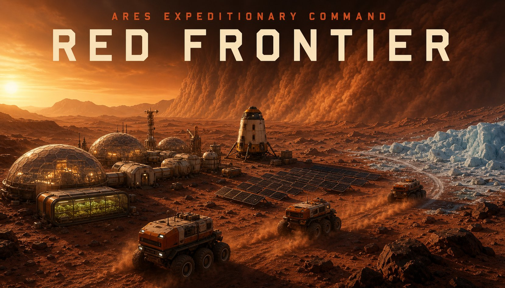
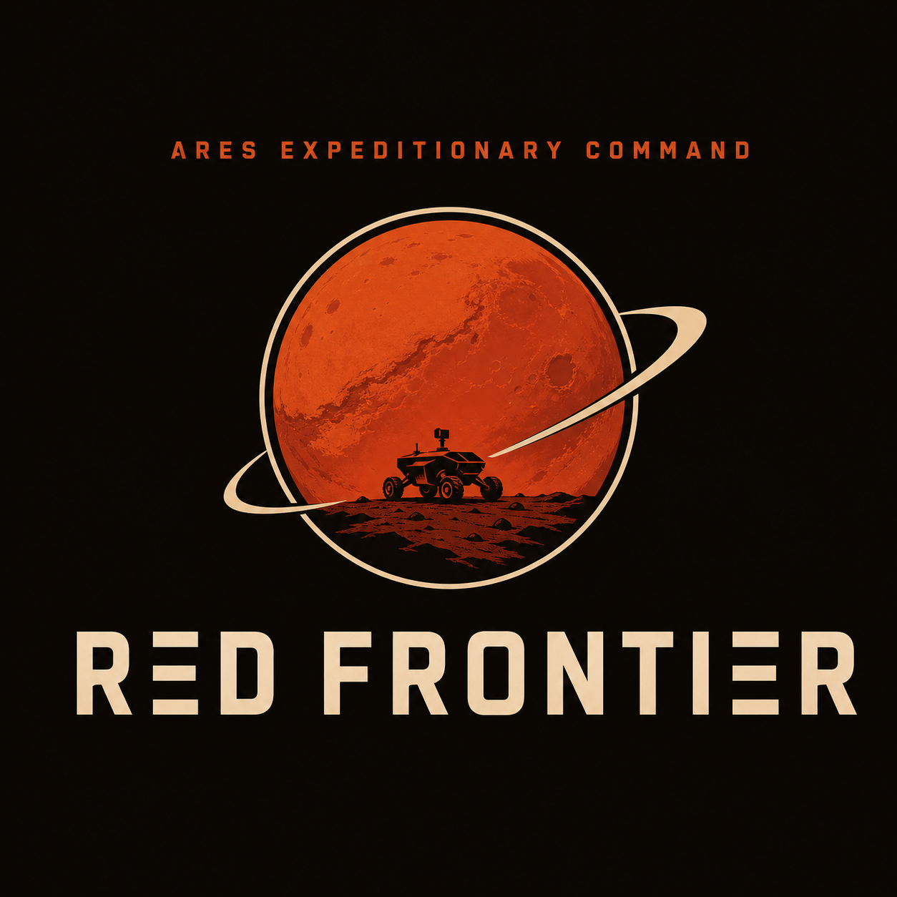
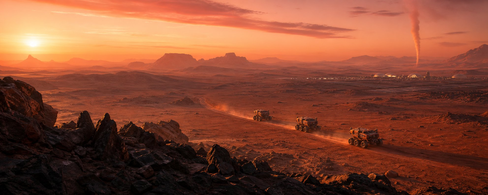

Mars · 2066 — Real-Time Strategy · Survival · Automation · Exploration
Mars, 2066. One human, a handful of machines, and an entire planet that does not want you there. Command autonomous rovers, build an industrial colony from ice and rust, forecast the storms before they strike — a hard-sci-fi survival strategy game where oxygen is the real clock.
One human. A handful of machines. An entire planet that does not want you there.
Mars, 2066. You are the sole crew of a planetary survey claim, and the landing was only the easy part. With four sols of air, water and rations in reserve, everything after "touchdown" is something you must build — from the ice up. Oxygen kills in hours. Water in days. Food in weeks. Build in that order, and the Red Planet still has a vote.
Keep a single human alive with a chain that never sleeps: haul ice, extract water, split oxygen, grow food. Every structure has tanks, every tank runs dry. Your commander can walk the surface on EVA suit oxygen — but the suit is the smallest tank in the colony.
Your crew is a fleet of rugged rovers that work while you think. Queue orders, set repeating haul routes from seam to silo, write automation rules, and let idle machines assign themselves. Keep them on the road: the Rover Garage fast-charges their batteries, services their drivetrains, and assembles new rolling stock from parts — including long-haul cargo rovers for the far seams.
Iron ore is dug. Steel is made. Run the Refinery, feed the Workshop, and choose a production line — electric motors, circuit boards, or water pipe — to fit out structures, refit rovers, and grow the fleet. Parts wear out; machines limp; the Repair Bay brings them back. Every kilowatt on the grid is spent visibly: at 35 kW, a furnace is a promise, not a plan.

Storms are travelling systems, not screen filters. A rover twenty meters away can sit in clear air while the pad takes fifty-meter-per-second dust head-on — and dust that thick carries lightning. It singes arrays, dumps batteries, buries panels and rovers alike, and it will kill a colonist caught outside. Build the Weather Radar Station and the sky stops being a surprise: track storm cells on the world map, extend your forecast, and decide what gets bolted down before the front arrives.
The map does not show you everything. Points of interest surface only when a rover finds them — wrecks to cut apart with a salvage torch and haul home, Earth supply drops that land under your transponder and start burying themselves the moment they touch. Distance is a resource. Dust is a clock.
The Red Planet is patient. It can wait for your batteries to die.
Minimum: Windows 10 (64-bit) · dual-core 2.5 GHz · 8 GB RAM · integrated GPU (Intel UHD 620 equivalent) · 1 GB storage. Recommended: quad-core 3.0 GHz · 16 GB RAM · discrete GPU (GTX 1050 / RX 560 class or better). Confirm against the final build before publishing.